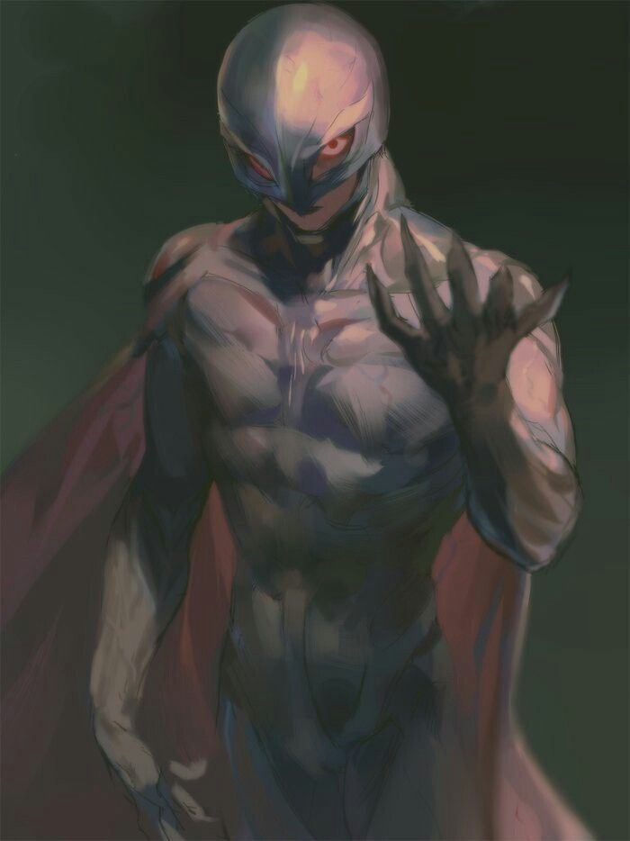
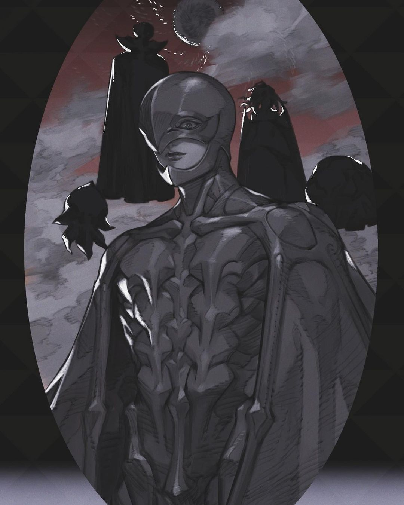

在因战争死去的母亲尸体中诞生的格斯，被偶然路过的佣兵团捡起，在恶劣的环境下向养父学习剑术，从小便作为战士在战场上生存。一日，格斯因本能反抗意外杀死养父，无奈之下逃出佣兵团，成为徘徊于战场周围的流动合约雇佣兵。在一次城堡攻防战，格斯击杀一位著名骑士，开始受到“鹰之团”团长古力菲斯注意。
古力菲斯为招纳格斯到自己麾下，两人展开决斗，格斯在决斗中战败并加入鹰之团，三年后成为鹰之团冲锋队队长。百年战争期间鹰之团受雇于米特兰王国，对抗尤达王国，战绩傲人，用计巧胜多尔多雷攻略战。多尔多雷攻略战成为鹰之团的顶峰之战。
百年战争结束后，鹰之团成为米特兰御用部队。古力菲斯命格斯除掉敌对皇储，格斯在刺杀过程中却误杀年幼的皇储之子，这令格斯悔恨不已。格斯见鹰之团已功成名就，古力菲斯建立王国的梦想亦尽在眼前，决定离开鹰之团，寻找自己生存的理由并想与古力菲斯成为对等的朋友，却被古力菲斯拒绝，引发二人的决斗，最终赢得决斗的格斯退出鹰之团。
因为格斯退团开始自暴自弃的古力菲斯玷污了公主，被同样垂涎女儿美色的鬼父国王发现后，一怒之下将古力菲斯监禁施以酷刑；国王接着调虎离山剿灭鹰之团，卡思嘉带领侥幸逃生的成员展开流亡生活 。一年后，隐居的格斯回到鹰之团，得知古力菲斯的事情便出发拯救，历经无数险阻后，最后在公主帮助下从监牢救出古力菲斯。然而无尽的酷刑将古力菲斯折磨到失去人形，在鹰之团里成为需要照顾的负担，而不再是当年引领千军万马的领导者。甚至没力气自我了断的古力菲斯，在绝望折磨下，用尽力气驾驶马车离开，却依然怀有建立王国的梦想。
马车跌入湖中，古力菲斯站起来，可能是意外也可能是宿命，古力菲斯从水中捡回了先前丢失的贝黑莱特。鲜血染上贝黑莱特，名为“蚀”的血祭开始了；此时鹰之团赶到湖边找古力菲斯，可为时已晚，巨大的结界笼罩天空，四大神之手与形似妖怪的使徒们降临，开始屠杀鹰之团。在献祭鹰之团之后，古力菲斯涅槃重生，成为魔王费蒙特，是为第五位神之手，此时他已失去人类正常的情感。
使徒们猥亵了卡思嘉并控制住格斯，费蒙特带着对格斯的恨与占有欲，当着格斯的面强奸了卡思嘉；愤怒之下，格斯砍下被咬住的左臂，向费蒙特冲去，却被费蒙特的屏障挡飞。此时，骷髅骑士前来救出被刻上恶魔烙印的卡思嘉和格斯，交给身在蚀圈之外而幸存的里基特。
卡思嘉在“蚀”的冲击下丧失理智并失忆，格斯看着疯癫的卡思嘉，精神也濒临崩溃，冲出高特（里基特师傅）的岩洞，奔向远方，一次次跌倒爬起，来到一片原野并遭遇鬼魂。格斯用骷髅骑士的剑斩灭了鬼魂，然后长久伫立在原野上，眺望远方乌云中逐渐显现的日出。“如果那个时代是黄金时代，那后辈们应该会称这个时代为黑暗时代吧.........”